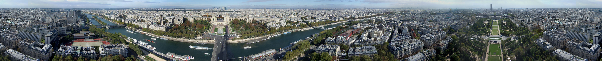
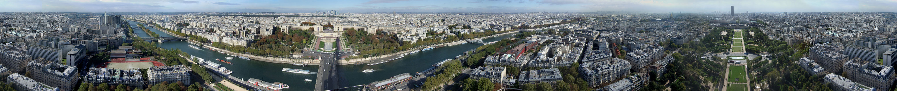

Histoire



Paris joue un rôle de tout premier plan dans l'histoire de l'Europe et du monde depuis des siècles.
Voici un résumé des grandes étapes que la capitale a traversée au fil des époques :
La position de Lutèce, sur l'île aujourd'hui nommée l'île de la Cité, permettant le franchissement du grand fleuve navigable qu'est la Seine par une voie reliant le Nord et le Sud des Gaules, en fait dès l'Antiquité une cité importante, capitale des Parisii, puis lieu de séjour d'un empereur romain. De façon générale, l'histoire du site parisien est toutefois mal connue jusqu'à la période gallo-romaine. Ainsi, on ne connaît pas précisément l'emplacement de la cité gauloise mentionnée dans les sources latines. Dans tous les cas, la cité romaine s'étend sur la rive gauche et sur l’île de la Cité ; elle prend le nom de Lutetia (Lutèce). La position stratégique de Lutèce face aux grandes invasions en fait un lieu de séjour pour l'empereur Julien entre 357 et 360, puis Valentinien Ier en 365-366. La cité prend le nom de Paris à cette époque. Si ses faubourgs subsistent encore au IVe siècle, la population se replie au Ve siècle dans l'île de la Cité, fortifiée par la récupération de pierres prises aux grands édifices ruinés. En 451, sainte Geneviève, future patronne de la ville, serait parvenue à convaincre les habitants de ne pas fuir devant les Huns d'Attila, qui s'en détournent effectivement sans combat.
En 508, après avoir conquis la majeure partie de la Gaule, Clovis fait de Paris sa capitale ; ville avantageuse car ayant une position au centre du territoire. Située au cœur d'un territoire agricole fertile avec un climat humide et doux, Paris devient une des principales villes de France au cours du Xe siècle, avec des palais royaux, de riches abbayes et une cathédrale. Au cours du XIIe siècle, avec l'université de Paris, la cité devient un des premiers foyers en Europe pour l’enseignement et les arts. Le pouvoir royal se fixant dans cette ville, son importance économique et politique ne cesse de croître. Ainsi, au début du XIVe siècle, Paris est l'une des villes les plus importantes du monde chrétien.
Au XVIIe siècle, elle est la capitale de la principale puissance politique européenne ; au XVIIIe siècle, l'un des plus grands centres culturels de l’Europe ; et au XIXe siècle, la capitale des arts et des plaisirs. Au XVIIIe siècle, Versailles ne dépossède pas Paris de son rayonnement intellectuel ; au contraire même, elle en fait une puissante frondeuse ouverte aux idées des Lumières. C'est la période des salons littéraires, comme celui de madame Geoffrin. Le XVIIIe siècle est aussi celui d'une forte expansion économique qui permet une importante croissance démographique, la ville atteint 640 000 habitants123 à la veille de la Révolution française.
La Révolution française débute à Versailles par la convocation des États généraux puis le Serment du Jeu de paume. Mais les Parisiens, atteints par la crise économique (prix du pain), sensibilisés aux problèmes politiques par la philosophie des Lumières et mus par une rancœur à l'égard du pouvoir royal ayant abandonné la ville depuis plus d'un siècle, lui donnent une nouvelle orientation. La prise de la Bastille le 14 juillet 1789, liée au soulèvement des ébénistes du faubourg Saint-Antoine, en est une première étape. Le 6 au matin, le château est envahi et le roi doit accepter de venir résider à Paris au palais des Tuileries et d’y convoquer l’Assemblée constituante qui s’installe le 19 octobre dans le Manège des Tuileries. Le 14 juillet 1790 se déroule la fête de la Fédération sur le Champ-de-Mars, lieu qui sera le 17 juillet 1791 le théâtre d'une dramatique fusillade. Dans la nuit du 9 août 1792, une commune révolutionnaire prend possession de l'hôtel de ville. La journée du 10 août voit la foule assiéger le Palais des Tuileries avec le soutien du nouveau gouvernement municipal. Le roi Louis XVI et la famille royale sont incarcérés à la tour du Temple. La monarchie française est de fait abolie. Les Parisiens vivent alors deux années de rationnement. La Terreur règne sous la coupe du Comité de salut public. Le Tribunal révolutionnaire, avec l'aide de la mairie, s'emploie à incarcérer tout ce que la ville compte encore de nobles suspects, de prêtres réfractaires et d'opposants jugés contre-révolutionnaires. La création de la charge de Préfet de police par Napoléon, ôtera à la municipalité tout pouvoir de police judiciaire. Le 21 janvier 1793, Louis XVI est guillotiné sur la place Louis XV, rebaptisée « place de la Révolution ». Il est suivi sur l'échafaud par 1 119 personnes, dont Marie-Antoinette, Danton, Lavoisier et finalement Robespierre. Le 2 décembre 1804, Napoléon Bonaparte, qui a pris le pouvoir en 1799, est sacré empereur par le pape Pie VII à la cathédrale Notre-Dame. Il décide d'établir à Paris la capitale de son Empire et ambitionne d'en faire la « nouvelle Rome ». Il ordonne dans ce but la construction des arcs de triomphe de l’Étoile et du Carrousel ainsi que celle du palais impérial de la Bourse (achevé sous la Restauration) et de la colonne Vendôme. En 1814, la bataille de Paris entraîne la capitulation de la capitale puis conduit à la première abdication de Napoléon et à la Restauration.
À la fin des Cent-Jours, la chute de l'Empire en juillet 1815 amène à Paris les armées anglaises et prussiennes, qui vont jusqu'à camper sur les Champs-Élysées.
Louis XVIII, de retour de son exil à Gand, s'installe à nouveau aux Tuileries.
La masse paupérisée du petit peuple, délaissée et excédée, est mûre pour des révoltes répétées que le pouvoir ne sent pas germer ou est sûr de vaincre :
les barricades font tomber Charles X lors des Trois glorieuses puis Louis-Philippe en 1848.
Avec l'avènement du Second Empire, Paris se transforme radicalement.
La ville a connu de profondes transformations sous le Second Empire dans les décennies 1850 et 1860 à travers d'importants travaux consistant notamment au percement de larges avenues,
places et jardins et la construction de nombreux édifices, dirigés par le baron Haussmann, donnant à l'ancien Paris médiéval le visage qu'on lui connait aujourd'hui.
De structure médiévale, aux constructions anciennes et insalubres, quasiment dépourvue de grands axes de circulation, elle devient en moins de vingt ans une ville moderne.
Lors de la Guerre franco-prussienne de 1870, Paris est assiégée pendant plusieurs mois mais n'est pas prise par les armées prussiennes.
Refusant l'armistice signé le 28 janvier 1871 et à la suite des élections de février qui portent au pouvoir des royalistes désireux de mettre fin à la guerre, les Parisiens s'insurgent le 18 mars 1871.
C'est le début de la Commune de Paris.
L'Assemblée monarchiste installée provisoirement à Versailles, la réprime entre les 22 et 28 mai lors de la Semaine sanglante qui reste à ce jour la dernière guerre civile qu'ait connue Paris.
Pendant la Belle Époque, l'expansion économique de Paris est importante.
Paris devient aussi la deuxième place financière internationale presque à égalité avec Londres.
Deux expositions universelles laissent une large empreinte dans la ville. La tour Eiffel est construite pour l'Exposition de 1889 (centenaire de la Révolution française) qui accueille vingt-huit millions de visiteurs.
La première ligne du métropolitain, le Grand Palais, le Petit Palais et le pont Alexandre-III sont inaugurés à l'occasion de celle de 1900 qui reçoit cinquante-trois millions de visiteurs.
De la Belle Époque aux Années folles, Paris connaît l'apogée de son influence culturelle (notamment autour des quartiers de Montparnasse et de Montmartre) et accueille de très nombreux artistes tels Picasso, Matisse, Braque ou Fernand Léger.
Lors de la Première Guerre mondiale, Paris, épargnée par les combats, subit des bombardements et des tirs de canon allemands.
En 1917, la création d'une réplique de Paris est envisagée pour leurrer les aviateurs allemands venus bombarder la capitale.
L'entre-deux-guerres se déroule sur fond de crise sociale et économique.
Pendant la Seconde Guerre mondiale, Paris, déclarée ville ouverte dès la débâcle, est occupée par la Wehrmacht le 14 juin 1940. Elle est relativement épargnée.
Le gouvernement du maréchal Pétain installé à Vichy, Paris cesse d'être la capitale et devient le siège du commandement militaire allemand en France (Militärbefehlshaber in Frankreich).
Les 16 et 17 juillet 1942, il est procédé à la rafle du Vel' d'Hiv', arrestation de 12 884 Juifs, la plus massive en France, pour l'essentiel des femmes et des enfants.
À l'approche des troupes alliées, la Résistance intérieure déclenche un soulèvement armé le 19 août 1944. La Libération de Paris se fait le 25 août avec l'entrée dans
Paris de la 2e division blindée du général Leclerc et de la 4e division d'infanterie américaine du major-général Raymond O. Barton.
En 1956, Paris se lie à Rome par un jumelage privilégié, symbole fort dans une dynamique géographiquement plus large de réconciliation et de coopération après la Seconde Guerre mondiale.
Sous les mandats du général de Gaulle de 1958 à 1969, plusieurs événements politiques se déroulent dans la capitale.
Le 17 octobre 1961, une manifestation en faveur de l'indépendance de l'Algérie est violemment réprimée.
Le 30 mai, une manifestation de soutien au gouvernement et au Général de Gaulle réunit un million de personnes, de la place de l'Étoile à celle de la Concorde.
Après deux mois de désordre et de troubles, les Parisiens votent massivement en faveur du général de Gaulle lors des élections législatives des 22 et 29 juin et le calme revient.
Le successeur du général de Gaulle, Georges Pompidou s'intéresse de près à la capitale. Il laisse son nom au bâtiment qui abrite le musée national d'Art moderne et la bibliothèque publique d'information et à la voie express rive droite.
Valéry Giscard d'Estaing, président à son tour, ne partage pas sa vision d'une modernisation radicale : il remet en cause le projet prévu pour les Halles et interrompt partiellement celui de voie express rive gauche.
En 1976, l'État accorde pour la première fois depuis 1871 une municipalité autonome à la capitale. Le gaulliste Jacques Chirac est alors élu maire, puis réélu en 1983 et 1989.
Sous le premier mandat du président François Mitterrand, une réforme est adoptée par la loi de décentralisation du 31 décembre 1982 : elle dote chaque arrondissement de la capitale d'un maire et d'un conseil municipal propre et non plus désigné par le maire de Paris.
En 1991, les quais de la Seine, du pont de Sully (en amont) au pont d'Iéna (en aval), sont classés sur la liste du patrimoine mondial de l'UNESCO au titre de remarquable ensemble fluvio-urbain avec ses monuments dont plusieurs constituent des chefs-d'œuvre architecturaux au rayonnement mondial.
Depuis 2015, la France subit une vague d'attentats terroristes islamistes sans précédent. La ville de Paris est également touchée en janvier 2015 avec la tuerie contre Charlie Hebdo et la prise d'otage de l'Hyper Casher qui fait 17 victimes.
À la suite de ces tragiques événements, une manifestation républicaine historique se déroule le 11 janvier 2015 réunissant plus de trois millions de personnes et près de 50 chefs d'État, pour défendre la liberté d'expression et rendre hommage aux victimes du terrorisme.
Dix mois plus tard, le 13 novembre 2015, des attaques sans précédent ont frappé la capitale et sa banlieue sous forme d'actions kamikazes aux abords du Stade de France, de tueries de masse dans des terrasses de café dans le 10e et le 11e arrondissement ainsi qu'à la salle de spectacle du Bataclan, attaques organisées par un commando d'une dizaine d'hommes se réclamant de l'État islamique qui ont fait 130 morts et des centaines de blessés.
Le 20 avril 2017, la capitale est de nouveau la cible d'une attaque terroriste, un terroriste ouvre le feu sur les Champs-Élysées coutant la vie d'un policier, Daech revendique l'attaque quelques heures après, et le 12 mai 2018, la capitale est encore la cible d'une attaque terroriste, un terroriste poignarde des passants dans le 2e arrondissement coutant la vie d'un passant, Daech revendique l'attaque quelques heures après.
Le 15 avril 2019, la ville est touchée par l'incendie de la cathédrale de Notre-Dame de Paris, qui provoque notamment l'effondrement de sa flèche.